Hi, I'm Tyler
I build digital
experiences.
UI/UX developer and Web specialist with 5+ years building and optimizing web experiences across 10,000+ client sites and 10+ CMS platforms.
& frameworks
Featured Work
Search Atlas AI Testcase
Led UX research & feasibility testing of an AI-powered SEO platform across multiple CMS environments.
Buffalo Bells Refresh
Redesigned a non-profit handbell choir's website from the ground up — wireframes, pattern library, and final build.
Fish Shop Shenanigans
Linked a semester of web projects into one cohesive site using SCSS preprocessing, nesting, and responsive grid loops.
About Me
Developer. Designer.
Problem Solver.
Who I Am
I'm Tyler Collett, web developer and UI/UX specialist with 5+ years building and optimizing web experiences across 10,000+ client sites and 10+ CMS platforms at Boostability. I am currently a Web Implementation Specialist Mentor at Boostability, where I have cut team project turnaround time from 90 to 14 days while scaling onboarding and team-wide technical competency.
I graduated with a degree in Web Design and Development at Utah Valley University and freelancing as a UI/UX developer and web specialst, my most recent freelance project has been helping Buffalo Bells refresh their brand and website from the ground up.
Technical Skills
Development
Design
CMS
Deployment / Hosting
SEO
Productivity Tools
Timeline
Website Implementation Specialist Mentor
Boostability — Cut team project turnaround from 90 to 14 days (84%), ran 18 hiring interviews resulting in 7 hires, and mentored 12 team members.
Freelance Web Designer & Developer
Buffalo Bells — Redesigned brand standards and built a modern, maintainable website.
Website Implementation Specialist
Boostability — Boosted site speed 50%+ on 224 client sites and executed on-page and technical SEO across 8+ CMS platforms for 10,000+ customers.
Contact
Tyler.Quinn.Collett@gmail.com
(801) 395-4713
Saratoga Springs, Utah
Soft Skills
Resume
Tyler Collett
UI/UX Developer & Web Specialist · Tyler.Quinn.Collett@gmail.com · (801) 395-4713
Experience
Website Implementation Specialist Mentor
- Decreased team project length-of-stay time from 90 days to 14 days (an 84% reduction) in 6 months by developing technical training resources and standardizing CMS and web implementation workflows.
- Participated in 18 hiring interviews evaluating technical skills and team compatibility, resulting in 7 successful hires.
- Built learning resources and led recurring Q&A sessions for 12 team members, improving onboarding speed and technical consistency.
- Strengthened client relationships by addressing escalations and special requests with timely, effective solutions.
- Troubleshot and repaired client websites, including full rebuilds in response to critical errors.
Freelance UI/UX Developer & Web Specialist
- Demonstrated an understanding of redefining and refining a brand goal and design standards to achieve a more professional website.
Website Implementation Specialist
- Developed custom HTML and PHP solutions to implement advanced SEO modifications and site enhancements beyond native CMS functionality.
- Designed and optimized client web pages with pixel-perfect accuracy, implementing schema markup, meta tags, heading structures, and keyword-optimized content to improve organic search rankings.
- Boosted site speed by 50%+ on 224 client websites through .htaccess and web.config optimization, caching configuration, image compression, and CSS/JS/HTML minification.
- Executed on-page and technical SEO across 8+ CMS platforms, including WordPress, Joomla, Webflow, and Wix, for 10,000+ unique customers.
- Monitored site health via Google Search Console and Google Analytics, identifying and resolving technical issues before they impacted rankings.
- Collaborated cross-functionally in a fully remote environment to align on client deliverables and SEO strategy.
- Recognized company-wide for completing one-third of team task volume in a single month on a team of 7.
Skills
Development
Design
CMS
Deployment / Hosting
SEO
Productivity Tools
Case Studies
Selected Work
Projects I've researched, designed, and built — click any to read the full case study.
Buffalo Bells Refresh
Full website redesign for my mom's non-profit handbell choir. Covered sitemap planning, responsive wireframes across three breakpoints, a full pattern library, and final build.
Search Atlas AI Testcase
Evaluated an AI-powered SEO platform for enterprise adoption at Boostability. Uncovered critical scalability, security, and cost-benefit barriers through structured cross-team testing.
Google's Material Design System
In-depth analysis of Google's design system, examining expressive components, layout principles, elevation, and how universal design guidelines support usability at scale.
Fish Shop Shenanigans
Linked a semester of web projects into one cohesive fish-keeping site, developing hands-on experience with SCSS preprocessing, nesting, universal variables, partials, and loop-generated responsive grids.
Search Atlas AI Testcase
Our Goal
Evaluate the effectiveness of Search Atlas in improving the overall customer experience at Boostability. We recruited volunteers from our customer base to form a test group and tested across different CMS platforms our customers typically use, in order to assess the feasibility of integrating Search Atlas into our workflow at scale.
What is Search Atlas
Search Atlas is an AI-powered SEO automation platform designed to help marketers, agencies, and businesses improve their online visibility and grow traffic. Its toolset includes keyword research, site audits, content optimization, rank tracking, link building, and reporting — all built into a single usable dashboard.
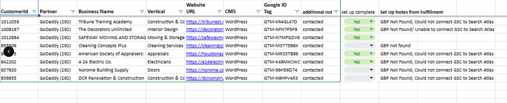
Setting Up the Testing
After recruiting volunteers, we trained a group of employees on my team to set up a Search Atlas account for each client. To do so we had to access the customer's account in our company's dashboard and locate the data Search Atlas required. This was immediately the first sign of trouble — the setup process was long and tedious, and a clear early indicator of the scaling challenges we would face. Despite this, we proceeded with testing.
Testing Workspace
To track the data we collected during testing, we maintained a structured workspace tracking each client's partner, customer ID, website URL, CMS in use, and additional relevant fields. After completing each Search Atlas integration we recorded any issues that arose and how long the setup took to complete.
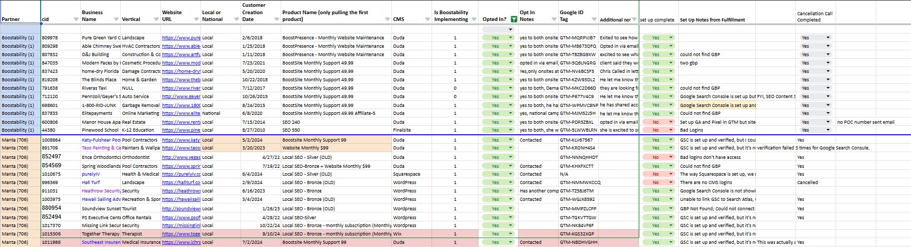
Testing: The Failure Points
Setting up the Atlas AI tool onto a client's site required many steps and very specific information. After creating the account it generated several verification codes to be added to the client's site — similar to what we do with Google Analytics, so that part looked manageable. However, even after correctly adding the verification code, the verification process could still take several hours to go live.
This was a major issue for our team. Boostability uses a cascading workflow process where everything must be set up in a single session. Waiting several hours mid-setup made the tool completely unscalable for our workflow.
Security Risks
Part of the Search Atlas setup required logging directly into each client's Google account. This meant clients had to disable their two-factor authentication to allow access — a significant security concern and a trust issue we were not comfortable asking customers to accept.
Cost vs. Functionality
Search Atlas is a powerful platform that would be valuable to someone with the technical expertise to fully leverage it. However, the price point did not align with the limited subset of features Boostability would realistically use — making the cost-benefit ratio unfavorable for our business case.
Overall Testing Results
Given the failure points and issues uncovered during testing, we concluded that Search Atlas was not a good fit for Boostability. The setup process required more time than our workflow allows, introduced unacceptable security risks for our customers, and the overall benefits did not justify the costs involved.
What I Learned
This process taught me the critical importance of documentation when conducting product evaluations. Each person involved in testing brought different perspectives and opinions — and because we had multiple groups with varying levels of technical expertise, the documentation allowed us to compare experiences across skill levels and surface patterns we wouldn't have seen otherwise.
Personally, my background working in CMS environments made some steps straightforward for me that other groups found difficult. Seeing those differences reinforced how much expertise affects the experience of a product — and why structured test groups are so valuable before committing to a new tool or workflow.
Ringing in a New Bell: Buffalo Bells Refresh
Background
Buffalo Bells is a non-profit organization my mom started 6 years ago. She was a member of the Bells on Temple Square for 10 years before we moved to the Buffalo, New York area. Missing the community of a handbell choir, she sourced an amazing deal on a 3-octave set of handbells and recruited musicians from her local church — and Buffalo Bells was born.
Buffalo Bells now has 3 choirs of varying skill levels, all directed by my mom. As the organization grew, her original website — built on BlogSpot with just concert flyers — was no longer sufficient. I took on a full redesign to make it easier for people to learn about the choirs, and to have a clear way of communicating upcoming concerts and events.
Finding Inspiration & Structuring the Sitemap
The first step was rethinking the site structure. I wanted to tell my mom's story and give the organization a real presence online, not just a flyer board. I structured a sitemap around what a handbell choir website genuinely needs: a Home landing page, About Us, Concerts, Blog, and a Sign-Up page.
From there I researched other bell choir sites for design inspiration, studying how they communicated identity, upcoming events, and community engagement.
Wireframes & Layouts
I set up wireframes and gathered feedback on the page layouts before moving into higher fidelity. The grid system was designed for three breakpoints: a 12-column grid with 20px column gaps for desktop, an 8-column grid for tablet, and a 4-column grid for mobile — ensuring the layout adapted cleanly across all devices.
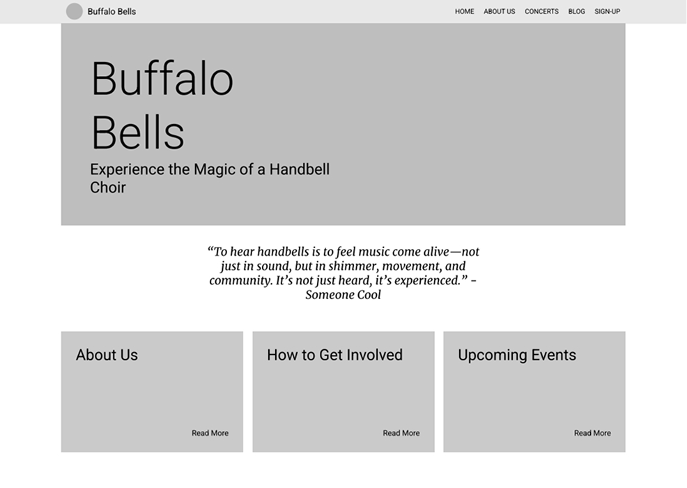
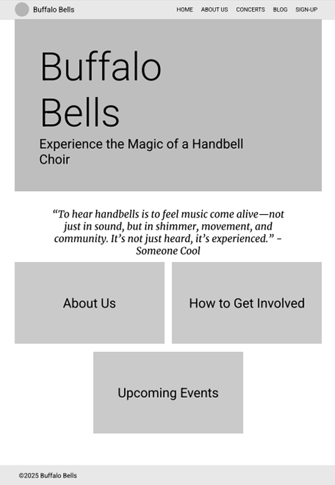
Pattern Library & Iconography
Before building, I established a full pattern library covering color palettes, iconography, button styles, typography, and logo variations. This ensured that design decisions were made consistently from the start — keeping colors complementary and maintaining visual coherence across all pages throughout the build.
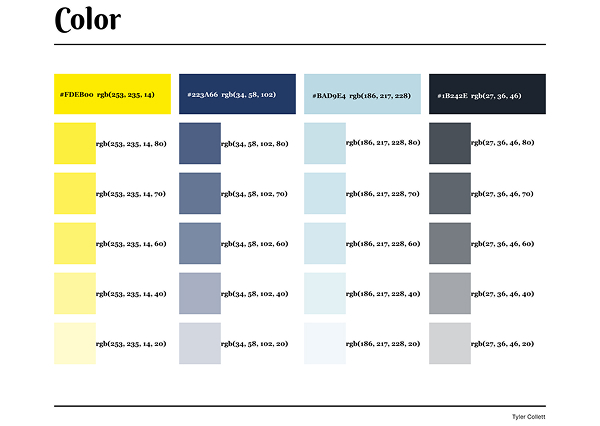
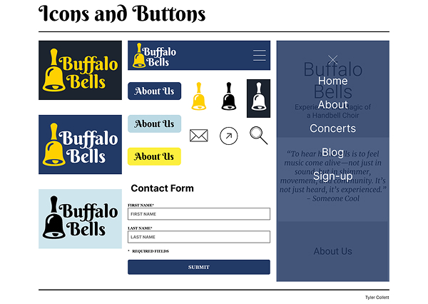
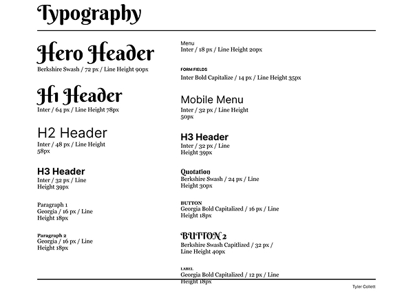
Final Layout & Surface Comps
The final step before build was creating surface comps — adding the approved colors, icons, and real imagery into the wireframe layouts. My mom reviewed the comps and requested a few content and image changes, but was happy with the overall colors and structure.
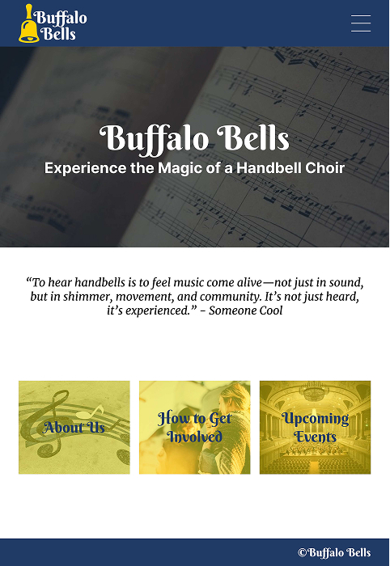
Final Outcome
The finished site used real photos of the Buffalo Bells, and my mom was genuinely happy with the outcome. My focus throughout was creating something modern and spacious — a site with room for important information but a layout that would be easy to edit and keep up to date. The final result hit exactly what I was going for: clean, organized, and fully maintainable by my mom without any technical help.
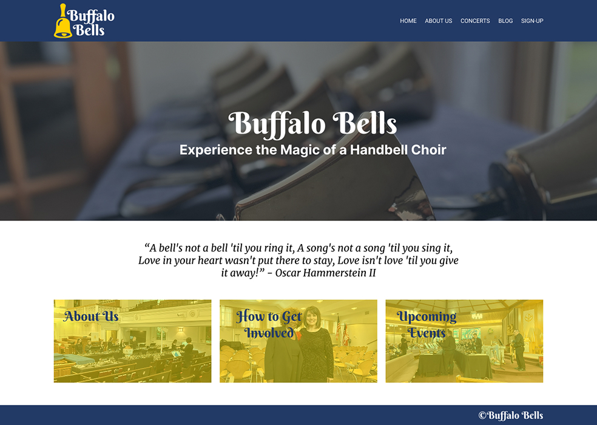
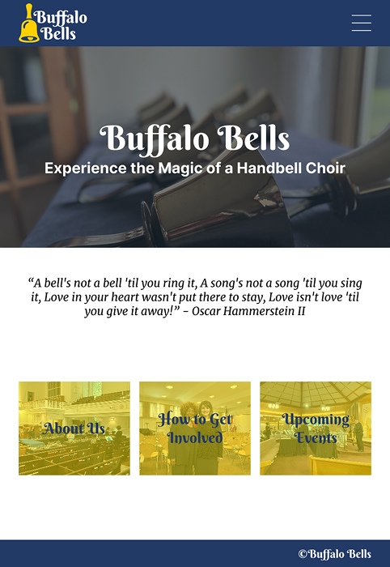
Google's Material Design System
Overview
Google's Material Design system focuses on conveying emotion through design. There are several expressive systems at play, but this analysis focuses on three core areas: expressive components, layout design, and elevation — along with the universal design principles of spacing, consistency, and contrast.
Expressive Elements
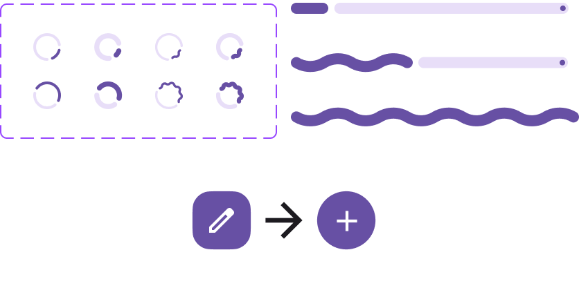
Expressive elements are visual and motion-based features used to communicate meaning and guide user attention. Motion can signal a completed action, color can highlight priority information, and typographic emphasis can direct users toward key content. When used thoughtfully, expressive elements strengthen the relationship between the interface and the user by making interactions clearer and more intuitive.
Layout Design
Material Design's layout focuses on creating clear, responsive structures that organize content in a predictable, user-friendly way. The system relies on a flexible grid, consistent spacing, and alignment to ensure elements are easy to scan and interact with. Layouts are designed to adapt across screen sizes — rearranging content responsively while maintaining a consistent visual hierarchy.
Material Design's layout emphasizes balance between structure and flexibility. Designers use standardized spacing, margins, and columns to create rhythm and consistency throughout an interface while still allowing components to scale or reposition as needed.
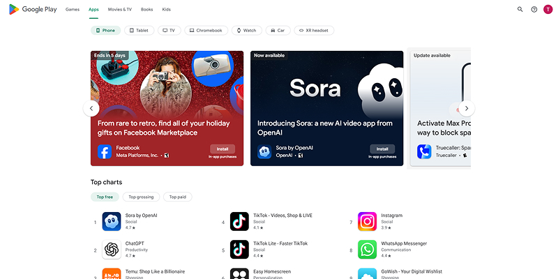
Elevation
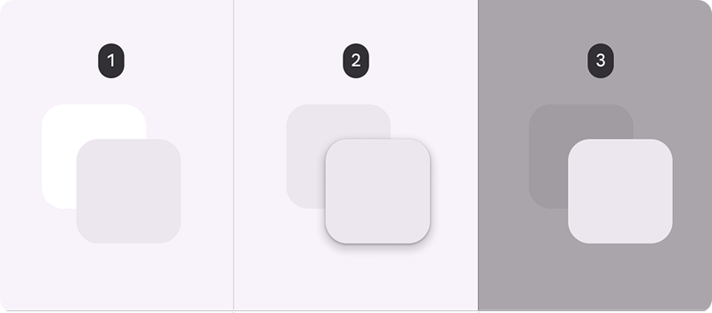
Elevation is a visual concept representing how elements appear layered in three-dimensional space. It uses shadows, depth, and movement to show which components are closer to the user and which are part of the background. By assigning different elevation levels to elements like cards or buttons, designers help users understand hierarchy, focus, and interactivity within the interface.
Elevation also changes during user interaction to provide visual feedback. When users tap or select an element, its elevation may increase slightly — creating a sense of movement and responsiveness, and reinforcing the idea that digital components behave like physical materials that can rise, move, and overlap.
Design Principles
Material Design is a strong example of universal design principles in practice. The principles that stood out most during this analysis were consistency, spacing, and contrast — each playing a distinct role in creating an emotionally coherent and user-friendly interface.
Spacing
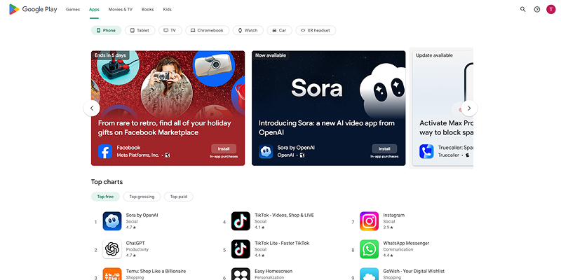
Material Design uses an 8-dp spacing system where margins, padding, and layout gaps are based on multiples of eight. This creates consistent rhythm and alignment throughout the interface while helping layouts adapt cleanly across screen sizes. Proper spacing separates content groups, highlights important elements, and improves readability.
Consistency
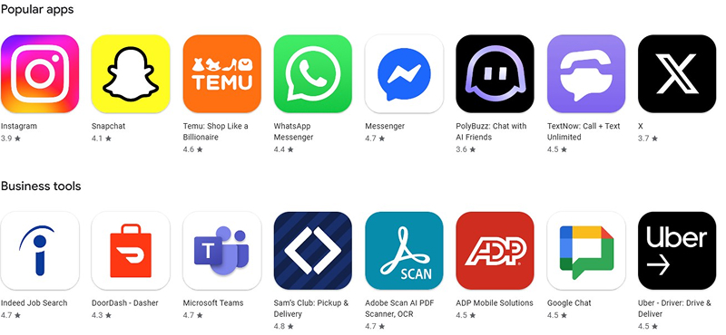
Consistency is achieved through standardized components, design patterns, and guidelines for elements like buttons, navigation, typography, and spacing. When designers follow these shared patterns, users can quickly recognize how interface elements behave — reducing learning time and building trust. Navigation bars, cards, dialogs, and menus are all designed to function predictably.
Contrast
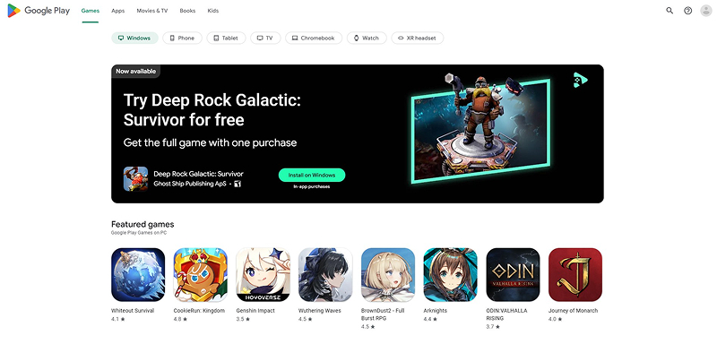
Material Design uses contrast to create clear visual hierarchy and make important elements stand out. Differences in color, size, typography, and elevation distinguish primary actions from secondary content and background elements. Material Design also emphasizes contrast to support accessibility — text and interactive elements are designed to maintain sufficient contrast against their backgrounds so content remains legible for all users.
Reflection
After a deeper dive into Google's Material Design system, I came away with a much greater appreciation for the importance of following design guidelines. The level of intentionality behind every decision — from spacing units to elevation levels — shows how a well-structured system scales across thousands of products and devices without losing coherence.
Other brands and companies all have their own design systems. Being able to read through and apply an unfamiliar design system is a critical skill, and this analysis gave me real practice in doing exactly that.
Fish Shop Shenanigans
End Goals
For one of my semesters we were tasked with several projects that each had different outcomes. As a challenge to myself I linked the projects together into a complete and functional website. I am very interested in fish keeping and have several aquariums, so I used that as the basis for my overall site. Two of those projects I was particularly proud of and will go into more detail on here.
My Fish Species Page
The first project I was really proud of was my fish species page. For this page I listed some of the fish species that I personally own and am also interested in. The problem to solve was making a cohesive layout with images and titles. This was also one of the first pages added to the site, so I had to figure out the visual theme I wanted to carry forward for the rest of the projects.
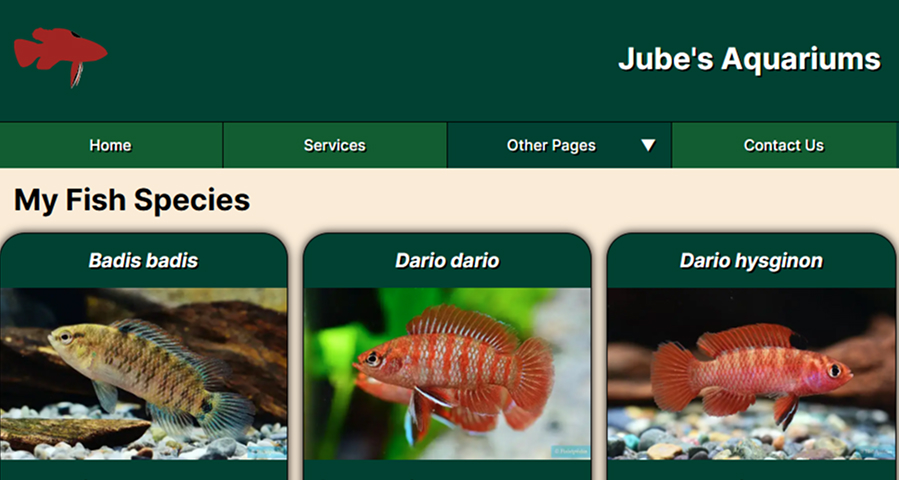
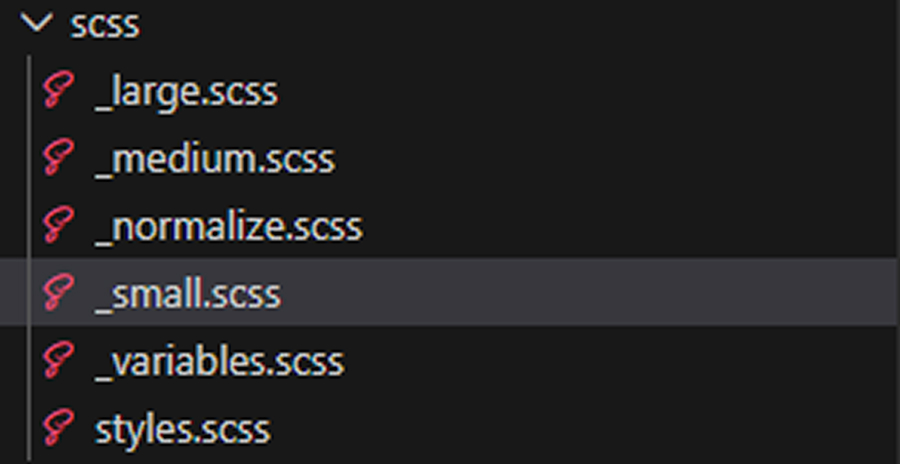
SCSS Preprocessor
The projects for this class used SCSS, a CSS preprocessor I hadn't had any experience with. It took some getting used to and required trial and error, but the species page gave me a foundation to start growing my understanding of what SCSS could do. The preprocessor includes several tools that make writing CSS more efficient, organized, and reusable — specifically variables, partials and imports, and nesting.
Nesting
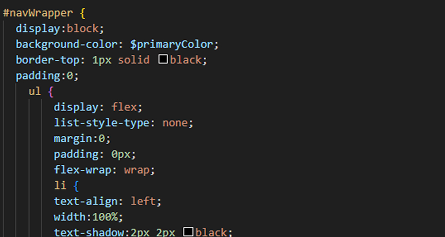
Nesting in SCSS allows developers to write CSS rules inside other rules, reflecting the structure of the HTML elements they style. Instead of repeating long selectors multiple times, related styles can be grouped within a parent selector. This makes the stylesheet easier to read because it clearly shows how elements are connected — and it was one of the first SCSS features I got comfortable with.
Universal Variables
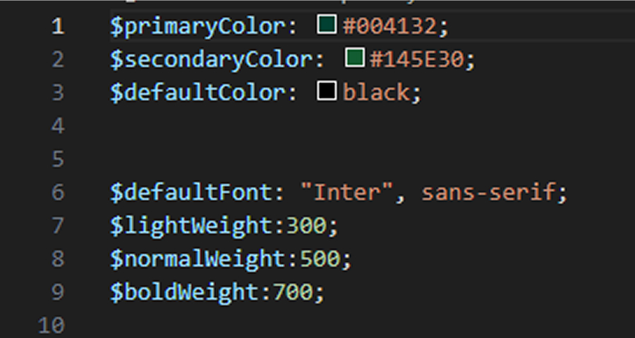
Universal variables in SCSS are values that can be reused throughout an entire stylesheet or across multiple files. I set up variables for brand colors ($primaryColor: #004132, $secondaryColor: #145E30), default fonts, font weights, and gutter spacing. This ensured design elements stayed consistent across every page while making future updates faster and simpler.
Partials & Imports
Partials are smaller SCSS files used to organize and separate sections of a stylesheet into manageable pieces. I split my styles across files like _large.scss, _medium.scss, _normalize.scss, _small.scss, and _variables.scss — each focused on a specific concern. These were then combined into a main styles.scss file using @import statements. This system made the project much easier to maintain because styles were grouped logically and could be updated without searching through a single massive file.
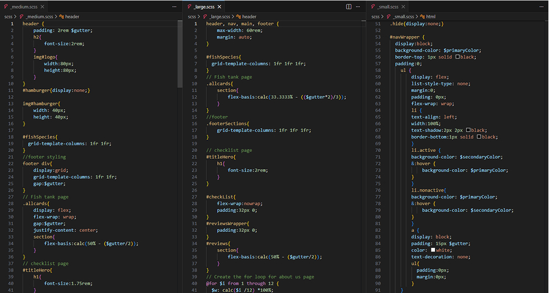
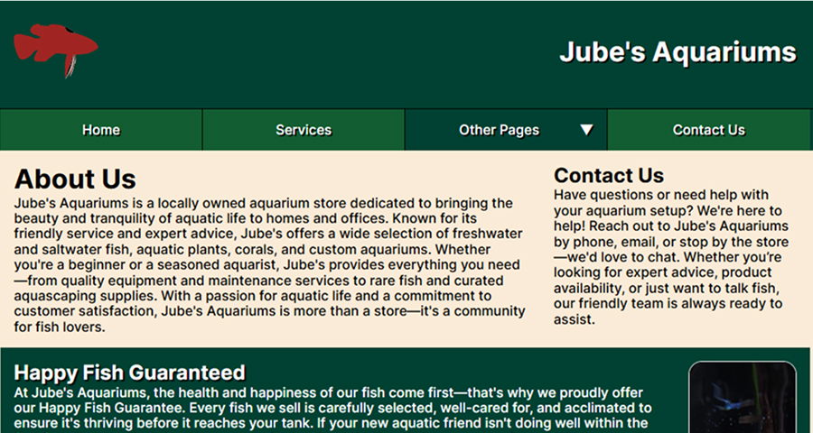
About Us Page
The other project I wanted to highlight was the About Us page. For this page I was tasked with using a CSS class-based row and column system to make the layout more responsive and create a more consistent structure between devices. This was where the responsive design skills I was building really started to come together.
Using @for Loops in SCSS
SCSS has a built-in @for loop that can automatically generate multiple CSS classes for a column-based layout instead of writing each class manually. This is especially useful when creating a grid system where columns have different widths — the loop repeats a block of code a set number of times and changes the value on each iteration, allowing the stylesheet to generate all necessary column classes quickly and consistently.
When using this method you can also set the grid column count for each screen size, which simplified making the page responsive and ensured the layout flowed correctly at every breakpoint.
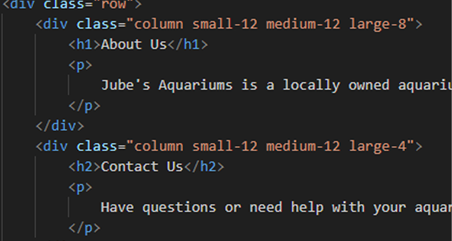
What I Learned
The challenge of linking these projects into a single website was a great learning experience. With each new project added I encountered issues with conflicting styling, JavaScript incompatibilities, and different design challenges. I would regularly go back through and update the other pages to make sure things still matched and that nothing was broken by new features. Each new page also made me want to rethink my layout — which led to a lot of revisions on previous work.
Overall these projects taught me a lot more about JavaScript and SCSS. SCSS in particular was a challenge to learn but makes things much more concise and organized once you understand the workflow. These projects were heavily code-focused, so in future iterations I would want to expand into a more design-oriented process — building moodboards, conducting research, creating wireframes, and testing prototypes before writing a single line of code.